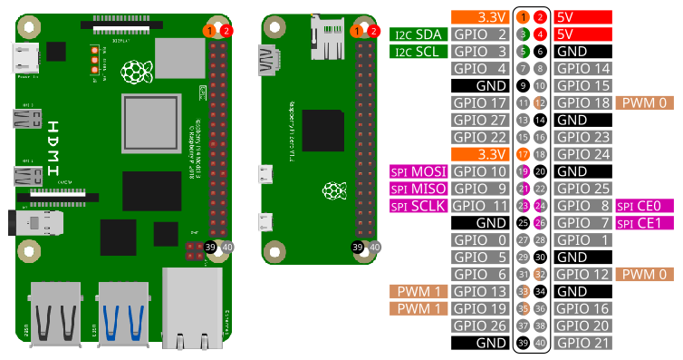

Before start coding you need to setup SPI on the Raspberry Pi. Please follow these instructions.

| Pin | Function |
|---|---|
| 19 | MOSI |
| 21 | MISO |
| 23 | SCLK |
| 22 | CE0 |
| 24 | CE1 |
Access the basic SPI commands with the library spi:
import spiOpen()
Open(interface)
Open(interface, pagesize)Open the SPI interface interface with a page size of
pagesize in bytes. interface and
pagesize are optional parameters. Only
pagesize bytes can be read/written at once. Larger amount
of data will be transferred in chunks. Change page size only if you
know, what you are doing.
interface
/dev/dev/spidev0.0pagesize
4096.When opening a SPI interface, the following default settings will be applied:
Example:
Open()
Open("/dev/spidev0.0")
Open("/dev/spidev0.0", 4096)Mode = GetMode()Returns the current SPI mode.
| Mode | Value |
|---|---|
| SPI_MODE_0 | 0 |
| SPI_MODE_1 | 1 |
| SPI_MODE_2 | 2 |
| SPI_MODE_3 | 3 |
SetMode(mode)Set current SPI mode to mode.
mode
| Mode | Value |
|---|---|
| SPI_MODE_0 | 0 |
| SPI_MODE_1 | 1 |
| SPI_MODE_2 | 2 |
| SPI_MODE_3 | 3 |
speed = GetSpeed()Get current SPI speed speed in Hz.
SetSpeed(speed)Set SPI speed to speed in Hz.
speed
BitsPerWord = GetBitsPerWord()Get the current setting for bits per word.
SetBitsPerWord(BitsPerWord)Set bits per word.
BitsPerWord
LSBFirst = GetLSBFirst()Get the current setting for LSBFirst. Returns true for
LSBFirst or false for MSBFirst.
SetLSBFirst()
SetLSBFirst(LSBFirst)Set LSBFirst or MSBFirst.
LSBFirst
true for LSBFirst; false for MSBFirsttrue.SetDelay(delay)Set transfer delay in microseconds.
delay
Close()When closing a SmallBASIC program, SPI connection will be automatically closed. If you want to manually close SPI access , use this function.
Write(dataByte)
Write(dataArray)Send one byte dataByte or an 1d array
dataArray of bytes to the interface.
dataByte
dataArray
Example:
Write(0x20)
Write([0x20, 0x21, 0xA3])WriteReg(reg, dataByte)
WriteReg(reg, dataArray)Send one byte dataByte or an 1d array
dataBytes of bytes to a register reg of the
devices.
reg
dataByte
dataArray
Example:
WriteReg(id, 0x05, 0x20)
WriteReg(id, 0x05, [0x20, 0x21, 0xA3])res = Read()
res = Read(bytes)Read number of bytes bytes from the device with device
id id. bytes is an optional parameter.
bytes
1res
res is an 1d array.res = Read(reg)
res = Read(reg, bytes)Read number of bytes bytes from the register
reg of the device. bytes is an optional
parameter.
reg
bytes
1res
res is an 1d array.Example:
res = ReadReg(0x05) ' Read one byte from register 0x05
res = ReadReg(0x05, 5) ' Read five bytes from register 0x05res = ReadWrite(writeArray)
res = ReadWrite(writeArray, bytes)First transfer the 1d-array writeArray to the device and
after finishing the write-action number of bytes bytes will
be read. bytes is an optional parameter.
dataArray
res
Example:
res = ReadWrite([0x20, 0x21, 0xA3])
res = ReadWrite([0x20, 0x21, 0xA3], 1)res = ReadWriteParallel(writeArray)
res = ReadWriteParallel(writeArray, bytes)Transfer the 1d-array writeArray to the device and at
the same time read number of bytes bytes.
bytes is an optional parameter.
dataArray
res
Example:
res = ReadWriteParallel([0x20, 0x21, 0xA3])
res = ReadWriteParallel([0x20, 0x21, 0xA3], 1)Please be careful, the sensors are usually driven with 3.3V but depending on the breakout board supply voltages of 5V are possible.
import spi
spi.Open("/dev/spidev0.0")
' Read chip id. BMP280 has id 0x58
id = spi.ReadReg(0xD0, 1)
print "Chip ID:", "0x"; hex(id)
delay(500)
' Get calibration data
cal = spi.ReadReg(0x88, 24)
dig_T1 = ByteTo16Bit(cal[0], cal[1])
dig_T2 = Short(ByteTo16Bit(cal[2], cal[3]))
dig_T3 = Short(ByteTo16Bit(cal[4], cal[5]))
dig_P1 = ByteTo16Bit(cal[6], cal[7])
dig_P2 = Short(ByteTo16Bit(cal[8], cal[9]))
dig_P3 = Short(ByteTo16Bit(cal[10], cal[11]))
dig_P4 = Short(ByteTo16Bit(cal[12], cal[13]))
dig_P5 = Short(ByteTo16Bit(cal[14], cal[15]))
dig_P6 = Short(ByteTo16Bit(cal[16], cal[17]))
dig_P7 = Short(ByteTo16Bit(cal[18], cal[19]))
dig_P8 = Short(ByteTo16Bit(cal[20], cal[21]))
dig_P9 = Short(ByteTo16Bit(cal[22], cal[23]))
' Configure sensor
spi.WriteReg(0x74, 0b01101111) ' 011: 4x oversampling temperature; 011: 4x oversampling pressure; 11: normal power mode
spi.WriteReg(0x75, 0b01010000) ' 010: t_standby = 125ms; 100: 5 Samples to reach 75%; 00: 4-wire SPI
for ii = 1 to 5
M = Measure()
print "T = "; M[0]; " °C P = "; round(M[1]/100,2);" hPa"
delay(200)
next
'#############################################################################
func ByteTo16bit(LSB, MSB)
return (MSB lshift 8) | LSB
end
func Short(a)
if(a > 32767) then
return a - 65536
else
return a
endif
end
func Measure()
local var1, var2, T, M, T_uncompensated, t_fine, P_uncompensated, P
' Get temperature
M = spi.ReadReg(0xFA, 3)
T_uncompensated = (M[0] lshift 12) | (M[1] lshift 4) | (M[2] rshift 4)
var1 = (((T_uncompensated rshift 3) - (dig_T1 lshift 1))*dig_T2) rshift 11
var2 = (((((T_uncompensated rshift 4) - dig_T1) * ((T_uncompensated rshift 4) - dig_T1)) rshift 12) * dig_T3) rshift 14
t_fine = var1 + var2
T = (t_fine * 5 + 128) rshift 8
T = T / 100
' Get pressure
M = spi.ReadWrite([0xF7], 3)
P_uncompensated = (M[0] lshift 12) | (M[1] lshift 4) | (M[2] rshift 4)
var1 = t_fine - 128000
var2 = var1 * var1 * dig_P6
var2 = var2 + ((var1 * dig_P5) lshift 17)
var2 = var2 + (dig_P4 lshift 35)
var1 = ((var1 * var1 * dig_P3) rshift 8) + ((var1 * dig_P2) lshift 12)
var1 = (((1 lshift 47) + var1)) * dig_P1 rshift 33
if (var1 == 0) then return 0
P = 1048576 - P_uncompensated
P = (((P lshift 31) - var2) * 3125) / var1
var1 = (dig_P9 * (P rshift 13) * (P rshift 13)) rshift 25
var2 = (dig_P8 * P) rshift 19
P = ((P + var1 + var2) rshift 8) + (dig_P7 lshift 4)
P = P/256
return [T, P]
end
import spi
import gpio
import canvas
const DC = 17 ' Data or command -> HIGH = data / LOW = command
const RST = 27 ' Chip reset
const BL = 22 ' Blacklight control
const ST7789_NOP = 0x00
const ST7789_SWRESET = 0x01
const ST7789_SLPOUT = 0x11
const ST7789_NORON = 0x13
const ST7789_INVON = 0x21
const ST7789_DISPON = 0x29
const ST7789_CASET = 0x2A
const ST7789_RASET = 0x2B
const ST7789_RAMWR = 0x2C
const ST7789_COLMOD = 0x3A
const ST7789_MADCTL = 0x36
const ST7789_MADCTL_MY = 0x80
const ST7789_MADCTL_MX = 0x40
const ST7789_MADCTL_MV = 0x20
const ST7789_MADCTL_ML = 0x10
const ST7789_MADCTL_RGB = 0x00
const ST7789_240x240_XSTART = 0
const ST7789_240x240_YSTART = 0
const ST7789_TFTWIDTH = 240
const ST7789_TFTHEIGHT = 240
const BLACK = 0x0000
const BLUE = 0x001F
const RED = 0xF800
const GREEN = 0x07E0
const CYAN = 0x07FF
const MAGENTA = 0xF81F
const YELLOW = 0xFFE0
const WHITE = 0xFFFF
const HIGH = TRUE
const LOW = FALSE
const PIN_DELAY = 0
colstart = 0
rowstart = 0
ystart = 0
xstart = 0
const WIDTH = 240
const HEIGHT = 240
Setup(240, 240) ' parameter: TFT width , TFT height
' Init canvas
c = canvas.create(WIDTH, HEIGHT, BLACK)
c._fontSize = 29
' Draw some graphics
c._pen = BLACK
canvas.draw_rect_filled(c, 0, 0, WIDTH, HEIGHT) ' Clear screen
c._pen = RED
canvas.draw_circle(c, 25, 210, 16, true)
c._pen = RGBto565(140, 130,255)
canvas.draw_string(c, "SPI with", 90, 15)
canvas.draw_string(c, "SMALLBASIC", 90, 50)
c._pen = WHITE
canvas.draw_line(c, 0, 0, 239, 239)
canvas.draw_rect(c, 0, 0, 239, 239)
t1 = ticks()
TransferFramebuffer(c._dat) ' c._dat is the canvas framebuffer
print ticks() - t1
spi.close()
print "done"
'########################################
sub Setup(w, h)
Print "Connect to TFT"
spi.open("/dev/spidev0.0")
print "Max. speed: ", spi.GetMaxSpeed()
Print "Set speed to 10 MHz"
spi.SetMaxSpeed(10000000)
Print "Set mode to SPI 0"
spi.SetMode(0)
Print "Open GPIO"
gpio.Open()
Print "Configure gpio"
gpio.SetOutput(RST)
gpio.SetOutput(DC)
gpio.SetOutput(BL)
Print "Connection established"
if(w == 240 and h == 240) then rowstart = 80
width = w
height = h
' Background light on
gpio.write(BL, HIGH)
' Hardware reset
gpio.write(RST, HIGH)
delay(50)
gpio.write(RST, LOW)
delay(50)
gpio.write(RST, HIGH)
delay(150)
'Init
writeCmd(ST7789_SWRESET) : delay(150)
writeCmd(ST7789_SLPOUT) : delay(500)
writeCmd(ST7789_COLMOD) : writeData8(0x55) : delay(10) ' RGB565
writeCmd(ST7789_MADCTL) : writeData8(0x0)
writeCmd(ST7789_CASET) : writeData16(ST7789_240x240_XSTART) : writeData16(ST7789_TFTWIDTH + ST7789_240x240_XSTART)
writeCmd(ST7789_RASET) : writeData16(ST7789_240x240_YSTART) : writeData16(ST7789_TFTHEIGHT + ST7789_240x240_YSTART)
writeCmd(ST7789_INVON) : delay(10)
writeCmd(ST7789_NORON) : delay(10)
writeCmd(ST7789_DISPON) : delay(10)
'SetRotation(2)
end
func RGBto565(r,g,b)
return ((((r) BAND 0xF8) lshift 8) BOR (((g) BAND 0xFC) lshift 3) BOR ((b) rshift 3))
end
sub WriteCmd(c)
gpio.write(DC, LOW)
spi.write(c)
end
sub WriteData8(Data_Uint8)
gpio.write(DC, HIGH)
spi.write(Data_Uint8)
end
sub WriteData16(Data_Uint16)
gpio.write(DC, HIGH)
spi.write([Data_Uint16 rshift 8, Data_Uint16 BAND 0xFF])
end
sub SetRotation(m)
writeCmd(ST7789_MADCTL)
rotation = m BAND 3
select case rotation
case 0
writeData8(ST7789_MADCTL_MX BOR ST7789_MADCTL_MY BOR ST7789_MADCTL_RGB)
xstart = colstart
ystart = rowstart
case 1
writeData8(ST7789_MADCTL_MY BOR ST7789_MADCTL_MV BOR ST7789_MADCTL_RGB)
ystart = colstart
xstart = rowstart
case 2
writeData8(ST7789_MADCTL_RGB)
xstart = 0
ystart = 0
case 3
writeData8(ST7789_MADCTL_MX BOR ST7789_MADCTL_MV BOR ST7789_MADCTL_RGB)
xstart = 0
ystart = 0
end select
end
'sub setAddrWindow(xs, xe, ys, ye)
sub setAddrWindow(xs, ys, xe, ye)
xs += xstart
xe += xstart
ys += ystart
ye += ystart
'CASET
WriteCmd(ST7789_CASET)
gpio.write(DC, HIGH) ' data (active high)
spi.write([xs rshift 8, xs BAND 0xFF])
spi.write([xe rshift 8, xe BAND 0xFF])
' RASET
WriteCmd(ST7789_RASET)
gpio.write(DC, HIGH) ' data (active high)
spi.write([ys rshift 8, ys BAND 0xFF])
spi.write([ye rshift 8, ye BAND 0xFF])
end
sub TransferFramebuffer(byref fb)
local ii, xx, yy, FrameBuffer_8bit, w, h
dim FrameBuffer_8bit(2 * WIDTH * HEIGHT)
ii = 0
h = HEIGHT - 1
w = WIDTH - 1
for xx = 0 to w
for yy = 0 to h
FrameBuffer_8bit[ii] = fb[xx, yy] rshift 8
FrameBuffer_8bit[ii + 1] = fb[xx, yy] BAND 0xFF
ii += 2
next
next
setAddrWindow(0, 0, w, h)
WriteCmd(ST7789_RAMWR)
gpio.Write(DC, HIGH)
spi.Write(FrameBuffer_8bit)
end